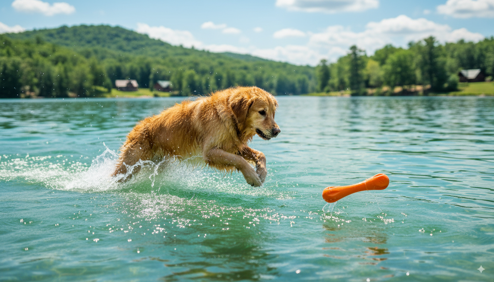

Pawsome Playtime: Your Guide to the Best Eco-Friendly Dog Toys of 2025
So, you've welcomed a furry friend into your life – congratulations! Getting ready for a new dog is exciting, but it can also feel a little overwhelming. One thing you'll quickly realize is that your pup needs toys, and lots of them! But what if you want to choose toys that are good for your dog and the planet? Don't worry, we've got you covered. This guide will walk you through choosing the best eco-friendly dog toys for 2025, making playtime fun and sustainable.
Why Choose Eco-Friendly Dog Toys?
Before we dive into specific toys, let's talk about why eco-friendly options are the paw-fect choice. Think about it: your dog will likely chew, slobber on, and maybe even bury their toys. That means those materials are going somewhere – either into a landfill or, hopefully, into a recycling bin. Choosing eco-friendly toys means reducing your environmental footprint and minimizing 🐕 these eco-friendly dog products the risk of your pup ingesting harmful chemicals. Plus, many eco-friendly toys are made from durable, natural materials that last longer, saving you money in the long run!
Top Features of Eco-Friendly Dog Toys
When searching for the perfect eco-friendly dog toy, keep an eye out for these key features:
- Sustainable Materials: Look for toys made from organic cotton, recycled materials (like plastic bottles!), natural rubber, hemp, or sustainably harvested wood. Avoid toys made from PVC, petroleum-based plastics, or materials with harsh chemicals.
- Durability: A durable toy will last longer, reducing waste. Consider toys made with tough, tightly woven fabrics or solid, natural materials.
- Biodegradability: While not all eco-friendly toys are biodegradable, it's a great bonus if they are! This means You can 🛒 shop eco dog products now they'll break down naturally without harming the environment.
- Safe for Your Pup: Always check for certifications and ensure the materials are non-toxic and safe for your dog to chew on.
Exploring Different Types of Eco-Friendly Dog Toys
The world of eco-friendly dog toys is surprisingly diverse! Here are a few popular options:
-
Organic Cotton Rope Toys: These are a classic for a reason! Organic cotton is soft, durable, and biodegradable. Look for tightly braided ropes to ensure they can withstand enthusiastic chewing.
-
Natural Rubber Toys: Natural rubber is a fantastic option, often sourced sustainably. These toys are usually bouncy and durable, perfect for fetch. Just be sure to check that they are free from harmful additives.
-
Recycled Plastic Toys: Many companies are now creating durable and fun toys from recycled plastic bottles and other materials. These are a great way to give plastic a second life!
-
Wooden Toys: Wooden toys, especially those made from sustainably sourced hardwoods, can be incredibly durable and provide a different textural experience for your dog. Just make sure they're smooth and free of splinters.
A Closer Look at a Top Contender: The [Product Name]
[This section would describe a specific eco-friendly dog toy, using details like material composition, durability, size, and any unique features. Remember to avoid affiliate links here]. For example, one popular choice is known for its [specific feature, e.g., incredibly durable construction, unique texture, or fun design]. Many owners praise its [positive attribute, e.g., long-lasting quality, ability to withstand vigorous chewing, or the dog's enjoyment of the toy]. The [material] used is both sustainable and safe for your furry friend.
Making the Most of Your Eco-Friendly Dog Toys
Here are a few tips for keeping your eco-friendly dog toys in top shape:
- Regular Cleaning: Wash your dog's toys regularly to remove dirt, saliva, and bacteria. Use gentle, pet-safe soap and air dry completely.
- Proper Storage: Store toys in a clean, dry place to prevent damage and mold growth.
- Rotate Toys: Keep your dog engaged by rotating their toys regularly. This prevents boredom and helps extend the life of each toy.
- Monitor for Wear and Tear: Inspect toys regularly for damage and replace them if necessary. A damaged toy can become a hazard.
Choosing the Right Toy for Your Dog
Remember to choose toys appropriate for your dog's size, breed, and chewing habits. A small, delicate toy might not be suitable for a powerful chewer, and vice versa. Observe your dog's play style to determine which types of toys they enjoy most.
Conclusion: Sustainable Playtime for a Happy Pup
Choosing eco-friendly dog toys is a win-win: it's better for your dog's health, better for the environment, and often better for your wallet in the long run. By considering the factors discussed in this guide, you can find the perfect toys that will provide hours of fun and enjoyment for your furry friend without compromising your values. Happy playing!